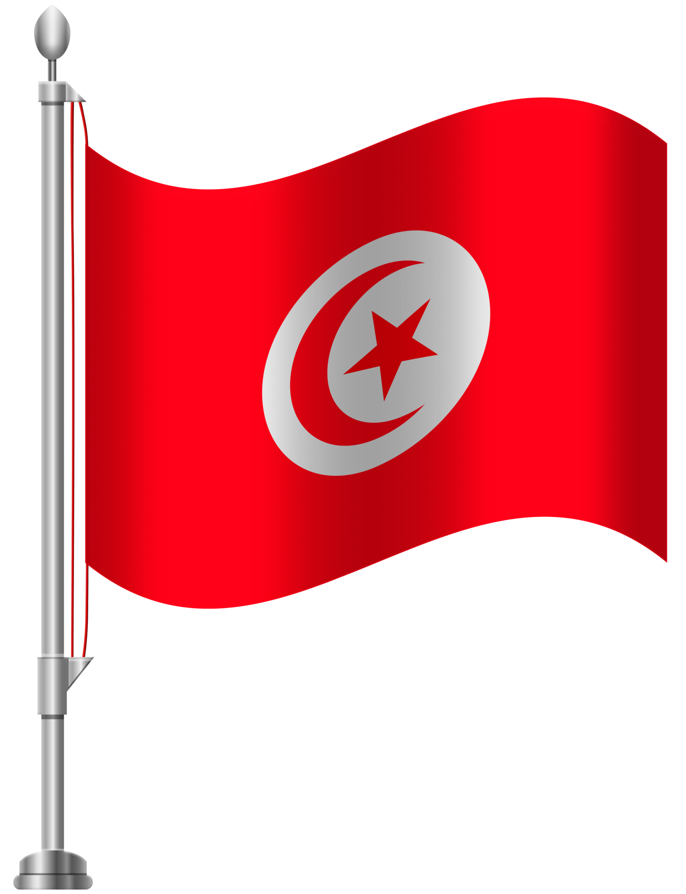

CarthaLibre
L’expertise pour la liberté, l’avenir par la vérité!
Technocratie et libéralisme au service du futur de la Tunisie.
Découvrez notre programmeNotre Vision Politique
Nous croyons en une Tunisie forte, unie et démocratique, où chaque citoyen a la possibilité de s’exprimer et de participer activement à la vie politique.
Nos valeurs reposent sur la transparence, l'inclusion et le progrès social. Nous nous engageons à travailler pour un avenir meilleur pour tous.
Rejoignez notre jeu !
Participez à notre aventure interactive et découvrez les valeurs de CarthaLibre tout en vous amusant. Ce jeu immersif vous plongera dans l'univers de notre parti, vous permettant d'explorer nos idées et de comprendre comment vous pouvez contribuer à un avenir radieux pour la Tunisie.
Votre voix compte ! Engagez-vous, faites entendre votre opinion et apprenez comment devenir un acteur du changement.